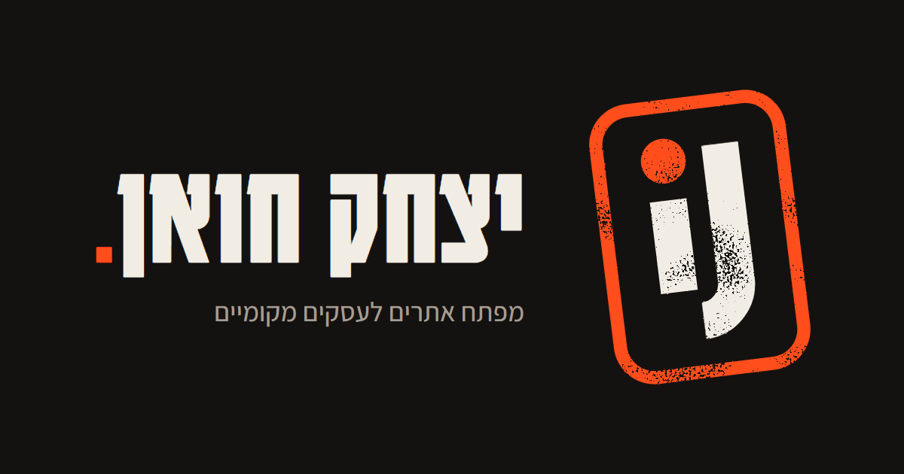
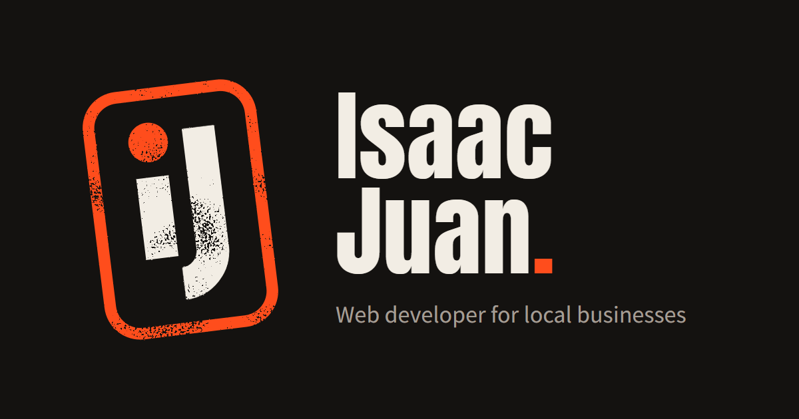
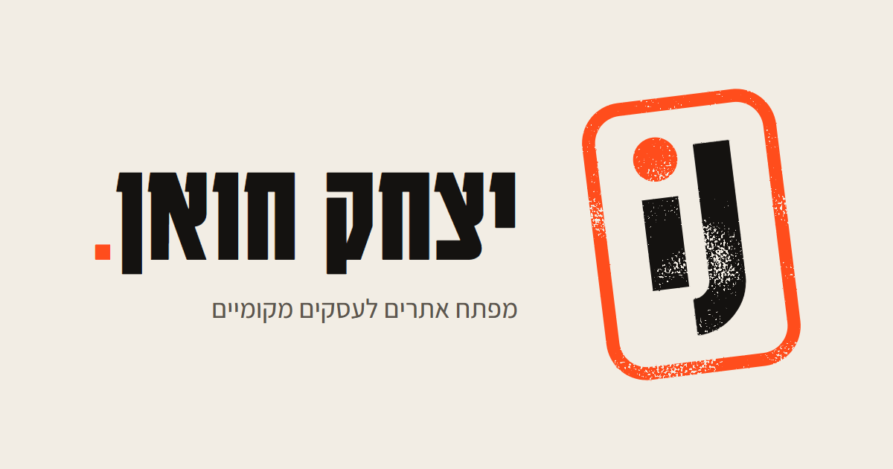
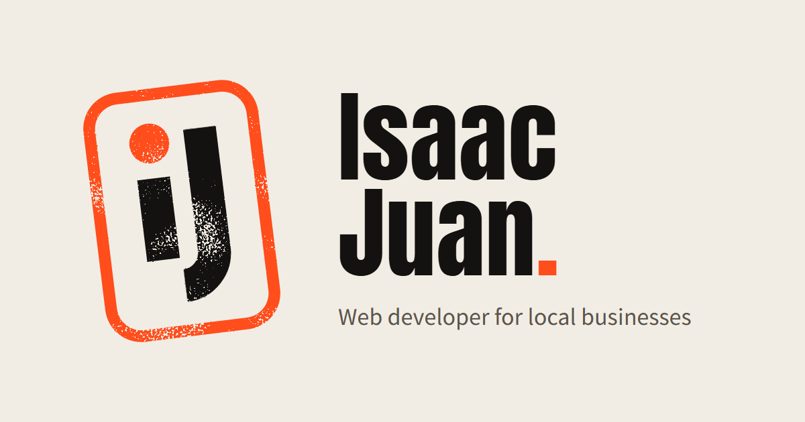

iJ logo. Final set
Original SVG geometry: one 14-unit stroke for both letters, a lowercase i (x-height 35) and a capital J (cap height 54) whose hook drops below the i's baseline. The stamp is a 70 × 102 rounded rectangle tilted 7°. Nothing on the site uses these yet.
Bone #F2EDE4
Vermilion #FF4D1C
Near-black #141210
1 · Full ink-stamp texture · header & share image
logo-full.svg
logo-full-light.svg
2 · Clean no texture · small sizes
logo-clean.svg
logo-clean-light.svg
3 · Large to tiny height in CSS pixels
Full
Clean, down to favicon sizes (16 and 32 use the dedicated untilted drawings)
In a header (44px, the site's tap-target height)
יצחק
Isaac
4 · Favicons 8× zoom, pixels as rendered · then actual size
favicon-16.png
untilted · 1.5px outline · 2px letters
favicon-32.png
untilted · 3px outline · 4px letters
favicon-48.png
clean, tilted
favicon-96.png
clean, tilted
icon-192.pngAndroid / manifest
icon-512.pngAndroid splash / manifest
Browser tabs at real size (16px favicon)
5 · Home screen apple-touch-icon 180 · Android 192
6 · Share images Open Graph · 1200 × 630




7 · Files
| File | Use |
|---|---|
logo-full.svg · logo-full-light.svg | Header, share images, large use. Texture is an SVG filter, so it stays vector. |
logo-clean.svg · logo-clean-light.svg | Small sizes, print, anywhere filters aren't supported. |
favicon-16.svg · favicon-32.svg | Pixel-grid sources for the two smallest favicons. |
icon-tilted.svg · icon-square.svg | Sources for 48/96 (transparent) and 180/192/512 (solid square). |
favicon.ico | 16 + 32 + 48 in one file, for browsers that ask for /favicon.ico. |
favicon-16/32/48/96.png · icon-192/512.png · apple-touch-icon.png | Rendered icons. |
og-{he,en}-{dark,light}.png | Share images per language, two themes. |
Notes
- Proportion locked. Every version uses the same ratios: i x-height ≈ 65% of the J's cap height, hook drop ≈ 35% of the cap height. The 16 and 32 drawings keep that ratio on whole pixels.
- Orange on bone is about 2.8:1. Fine for a logo (logos are exempt from contrast rules), but don't use that orange for small text on the light background.
- Texture is subtle on purpose: at header size it's nearly invisible, it shows at share-image size and above.